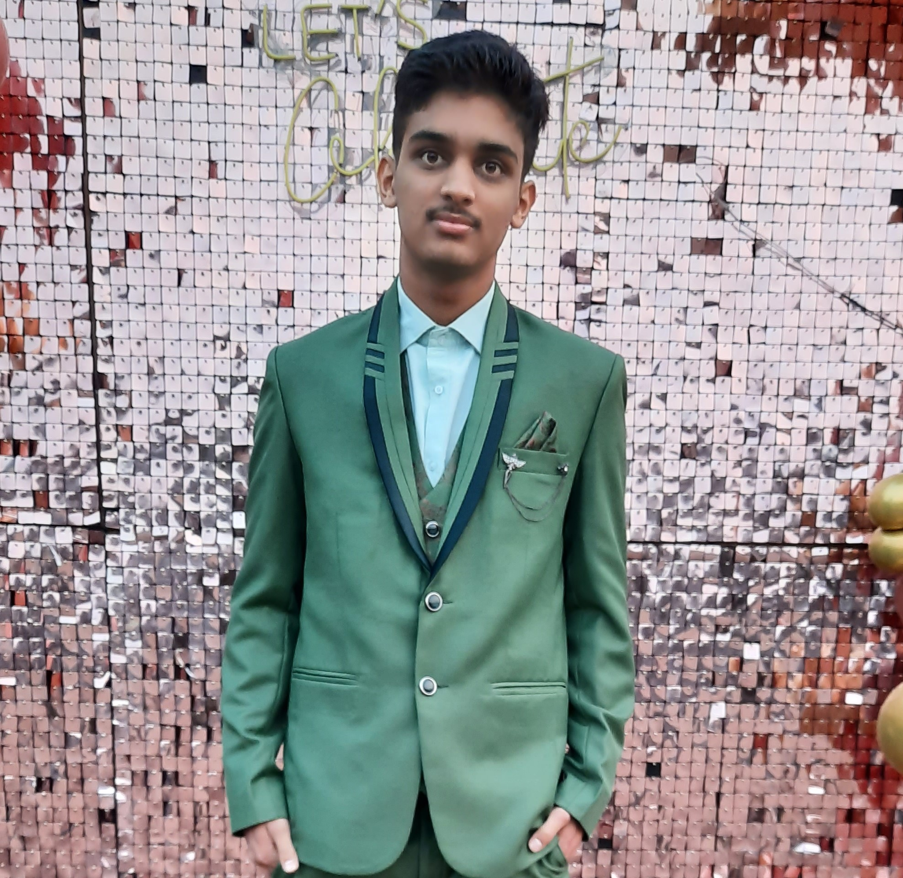

Aman Shukla

Future Entrepreneur | Prompt Engineer | Aspiring Web Developer
Hello and my name is Aman Shukla and I am from India. I am a young aspiring entrepreneur and a person who loves to
explore new things and learn them if they help in growth
I am currently learning web development and I believe I can become one of
the best. I'ld be very happy to collaborate with other
developers around the world and help them out
Education
- Primary Education
- Education - Secondary School Certificate Examination
- Date of Passing - 15 July 2020
- Secondary Education
- Education - Senior Secondary School Certificate Examination
- Date of Passing - 9 August 2022
- Under-Graduate
- Subject - Computer Science
- Semester - 1
- Year of Starting - 2023
- Year of Completion - 2027
Work Experience
Currently Not working anywhere but aspiring to do internships and work with companies
Talking about my contributions in past I have worked with a lot of social active communities
who work for betterment of society and contribute in development
Also I have served as president and vice president, project heads of many clubs and projects at my School
Skills
While looking at the high demand and needful skills, I do belive that I possess the necessary ones
needed to support the organization. For reference here are some mentioned below:
- Hard Skills
- Web Developer
- Prompt Engineer
- Programmer Proficient in
- Soft Skills
- Leadership
- Team Work and Management
- Great Communication Skills
- Great Negotiation Skills
Other Achievements
- Winner of HTML Coding Competition
- Runner-Up of Python Programming Competition
To know more about me and know about my hobbies click on the links below
Hobbies
Contact Me